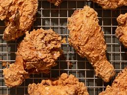

Ingredients
- 1 whole chicken, cut into pieces
- 2 cups buttermilk
- 2 cups all-purpose flour
- 1 tbsp paprika
- 1 tbsp garlic powder
- 1 tbsp onion powder
- 1 tsp salt
- 1 tsp black pepper
- Vegetable oil for frying
Requirements
- Large mixing bowl
- Deep fryer or large pot
- Thermometer
- Spatula
- Knife
- Cutting board
Description
- In a large mixing bowl, soak chicken pieces in buttermilk for at least 1 hour. This helps to tenderize the chicken and add flavor.
- In another bowl, combine flour, paprika, garlic powder, onion powder, salt, and black pepper. This forms the seasoned coating for the chicken.
- Heat oil in a deep fryer or large pot to 350°F (175°C). This ensures the oil is hot enough to fry the chicken evenly.
- Dredge each piece of chicken in the flour mixture, shaking off excess. This ensures an even coating.
- Fry chicken in batches until golden brown and cooked through, about 10-12 minutes per piece. This ensures the chicken is crispy on the outside and juicy on the inside.
- Drain on paper towels and serve hot. The paper towels help to absorb excess oil.